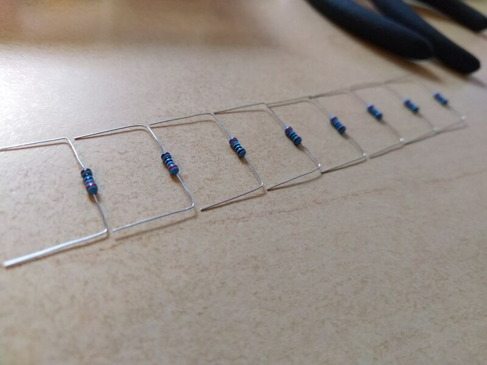

Тут відбуваються цікаві досліждення на тему того, які preview генерують Twitter, Facebook, Skype, Slack та інші.
Розумієте, це дуже потрібно. Якщо немає OpenGraph та Twitter Card, то вас наче і не існує. Така халепа. Тож давайте писати тут хоч щось.
Дуже складно без зображень. Коли це новина з фото, то нема питань. А якщо просто декілька рядків тексту з роздумами? Бісить. Але я щось придумаю. Принаймні, можна поставити рівний фон, хай FB вдавиться.